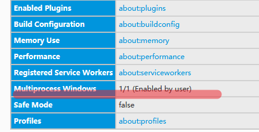
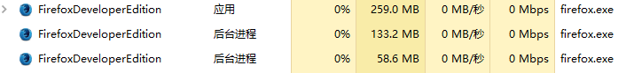

Firefox 现在已经支持多进程特性，但这项新特性截至目前为止都并不是很成熟，以至于有的 Firefox 版本中并没有默认开启。如果想体验 Firefox 多进程新特性，我们完全可以自行强制开启。
有些 Firefox 虽然出厂默认启用了多进程特性，但会因为 Accessibility Tools 而在重启后自动关闭多进程特性，这时我们也需要手动强制开启多进程特性。
强制开启 Firefox 多进程特性的步骤如下:
- 浏览器地址栏键入
about:config，进入高级设置 - 找到
browser.tabs.remote.autostartpreference，将其值修改为true。如果其值已经为true，则无需改变。 - 在列表空白区域，右键新建一个
Booleanpreference，命名为browser.tabs.remote.force-enable，并将其值设定为true - 如果是因为 Accessibility Tools 导致 Firefox 自动关闭了出厂的多进程特性，我们还需将
accessibility.force_disabled的值修改为1（默认值应该是0）
成功完成上述操作，重启 Firefox 即可享受多进程。

